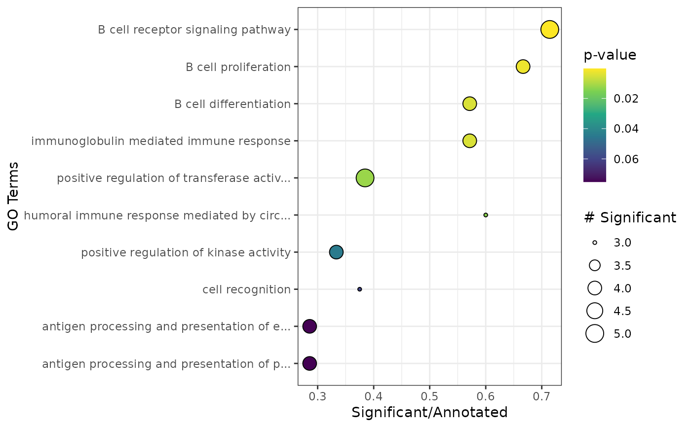

plot_enrichment.RdPlots the results from the data frame generated via apl_topGO.
plot_enrichment(genenr, ntop = 10)data.frame. gene enrichment results table.
numeric. Number of elements to plot.
Returns a ggplot plot.
library(Seurat)
set.seed(1234)
cnts <- GetAssayData(pbmc_small, slot = "counts")
cnts <- as.matrix(cnts)
# Run CA on example from Seurat
ca <- cacomp(pbmc_small,
princ_coords = 3,
return_input = FALSE,
assay = "RNA",
slot = "counts")
#> Warning:
#> Parameter top is >nrow(obj) and therefore ignored.
grp <- which(Idents(pbmc_small) == 2)
ca <- apl_coords(ca, group = grp)
ca <- apl_score(ca,
mat = cnts)
#>
|
| | 0%
|
|======= | 10%
|
|============== | 20%
|
|===================== | 30%
|
|============================ | 40%
|
|=================================== | 50%
|
|========================================== | 60%
|
|================================================= | 70%
|
|======================================================== | 80%
|
|=============================================================== | 90%
|
|======================================================================| 100%
enr <- apl_topGO(ca,
ontology = "BP",
organism = "hs")
#>
#> groupGOTerms: GOBPTerm, GOMFTerm, GOCCTerm environments built.
#>
#> Building most specific GOs .....
#> ( 1419 GO terms found. )
#>
#> Build GO DAG topology ..........
#> ( 3911 GO terms and 8831 relations. )
#>
#> Annotating nodes ...............
#> ( 204 genes annotated to the GO terms. )
#>
#> -- Elim Algorithm --
#>
#> the algorithm is scoring 678 nontrivial nodes
#> parameters:
#> test statistic: fisher
#> cutOff: 0.01
#>
#> Level 13: 5 nodes to be scored (0 eliminated genes)
#>
#> Level 12: 15 nodes to be scored (0 eliminated genes)
#>
#> Level 11: 18 nodes to be scored (0 eliminated genes)
#>
#> Level 10: 29 nodes to be scored (10 eliminated genes)
#>
#> Level 9: 39 nodes to be scored (10 eliminated genes)
#>
#> Level 8: 70 nodes to be scored (10 eliminated genes)
#>
#> Level 7: 100 nodes to be scored (10 eliminated genes)
#>
#> Level 6: 130 nodes to be scored (18 eliminated genes)
#>
#> Level 5: 129 nodes to be scored (18 eliminated genes)
#>
#> Level 4: 86 nodes to be scored (18 eliminated genes)
#>
#> Level 3: 41 nodes to be scored (18 eliminated genes)
#>
#> Level 2: 15 nodes to be scored (18 eliminated genes)
#>
#> Level 1: 1 nodes to be scored (18 eliminated genes)
plot_enrichment(enr)
